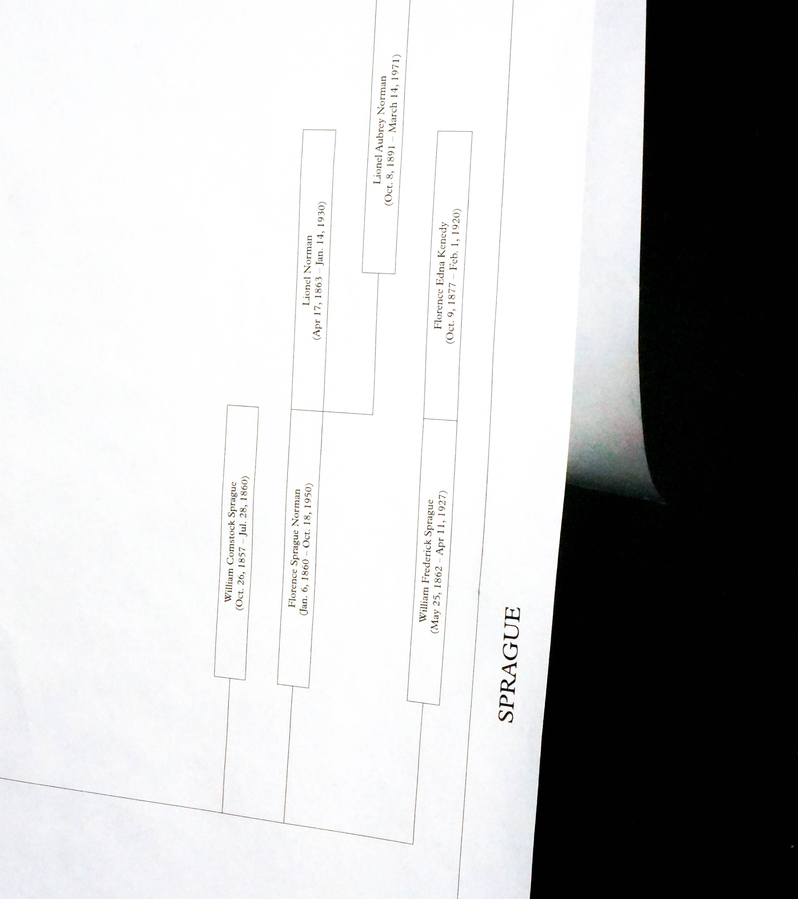

is pursuing a BFA in Graphic Design @ Rhode Island School of Design.
Currently @ RISD Design Guild. Previously @ Apple.
is pursuing a BFA in Graphic Design @ Rhode Island School of Design.
Currently @ RISD Design Guild. Previously @ Apple.
Research, Code
Fall 2024
With Katie Hwang and Rachel Shin for Design Studio III @ RISD.
An epitaph is a short text honoring someone who has passed, often found as an inscription on a tombstone.
The Epitaph Project begins with mapping the historical site of the Sprague family lot at Swan Point Cemetery in Providence, Rhode Island, and culminates in an interactive website that asks users to consider: How do you want to be remembered? Typeset in Plantin MT Pro.
Weaving together obituaries and tombstone information, we reconstructed a family tree of those buried at the lot, retelling the story of one of Rhode Island’s most prominent families.
Our time at Swan Point was beyond introspective, inviting questions such as “How do you want to be remembered?”, or “What do you want to leave behind?”. We wanted to share this experience in a light-hearted yet thought-provoking way — our website allows users to design their own tombstone with a custom epitaph, and save it for hopefully much, much later.
Visit the live site here (debugging in progress). Prototyped in Figma, coded in HTML/CSS/JS.